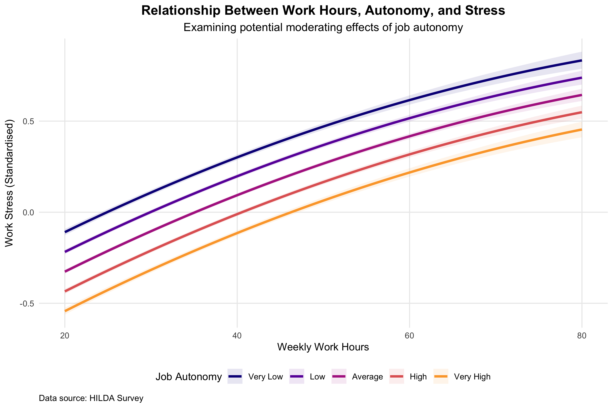
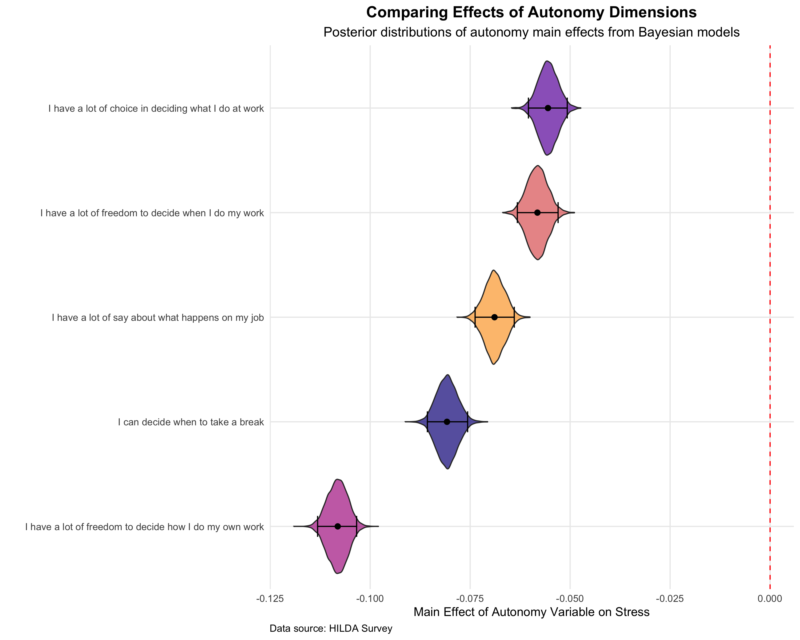

Many employees today find themselves regularly working long hours, often pushing past the traditional 40-hour week. Dedication and passion are commendable. But these long hours often come at the cost of chronic work stress and burnout, leading to disengagement, errors, and increased turnover.
Organisations are continually seeking ways to support their employees and maintain productivity without sacrificing well-being. Burnout alone is estimated to cost the Australian economy billions annually due to lost productivity and absenteeism. A recent report from the Black Dog Institute highlighted that poor mental health is a strong driver of turnover and reduced work capacity in Australian workplaces, with economic analyses consistently showing that mental health conditions cost Australian businesses around $11 billion each year through absenteeism, reduced work performance, increased turnover, and compensation claims.
This raises an important question for health and safety managers, and HR leaders: can granting employees more control over their work lessen the toll of extended hours? In a previous post, we examined whether flexibility reduced the extent to which longer hours lead workers to leave an organisation (spoiler alert: it didn't). But can offering autonomy more broadly at least reduce stress? We investigated this in a new analysis of Australian workplace data, and the findings offer some interesting insights.
Working Smarter, Not Just Harder: What the Data Show
To understand the relationship between long work hours, job autonomy, and stress, we used data from the Household, Income, and Labour Dynamics in Australia (HILDA) survey, a long-term study of life in Australia that has tracked individuals over time since 2001. Our analysis included 22,415 workers, contributing 163,955 observations across time from 2005 to 2023.
We used a Bayesian mixed-effects model to examine the impact of working hours on employee stress. This approach allowed us to account for the nested structure of the data (observations clustered within individuals over time) and to quantify the uncertainty around our estimates. We also controlled for individual characteristics such as age, gender, and education. The results are shown in the figure below, which shows how different levels of job autonomy relate to work stress, for those working between 20 and 80 hours per week.

In this graph, the x-axis represents working hours and different levels of autonomy are represented by the different lines. The narrow ribbon around each line represents the range of most plausible levels of stress based on the model (i.e., the 95% credible interval). Our findings show that longer work hours are associated with increased stress (in other words, the lines generally trend upward as hours increase). While higher job autonomy led to lower stress levels overall (the lines representing higher autonomy are lower on the graph), our analysis did not find any buffering effect for those working very long hours. Regardless of autonomy level, longer hours tends to produce the same increase in work stress.
This suggests that even with high autonomy, the negative impact of excessively long hours on stress does not change. However, it is important to note that higher overall autonomy was generally associated with lower work stress, indicating a consistent benefit regardless of hours worked. This positive effect of autonomy on well-being is consistent with previous research showing its impact on job satisfaction, turnover intentions, and well-being.
We then looked at the impact of five different types of autonomy (see figure below). This follow-up analysis suggested that control over how work is done had the strongest impact on reducing stress. This was followed by autonomy over when to take breaks from work, having a say in what happens in the job, freedom to decide when work is done, and finally in having the choice in deciding what work to do at work. However, all five dimensions of autonomy had credible effects in reducing stress. These findings are consistent with research on job control, which suggests that having discretion over one's work processes is a key factor in reducing job strain.

Empowering Employees: Creating Sustainable Workloads and Well-being
Our findings suggest that while job autonomy is important for reducing general work stress, it may not be a magic bullet for the burnout associated with consistently working excessive hours. For organisations, this means a dual approach is needed. Firms need to foster autonomy, but also address the root causes of chronic overwork.
First, prioritise granting employees autonomy, especially over how they complete their tasks. This type of control can significantly reduce stress and enhance overall job satisfaction, which research consistently links to improved employee retention and performance. This could involve allowing employees to choose their work methods, set their own break times, or have more input into daily decision-making. Managers should also lead by example, adjusting their own schedules for personal needs to show that these options are truly acceptable. Studies show that when employees feel they have autonomy in their jobs, they perform better and are more satisfied with their jobs.
Second, pay close attention to departments or roles where 50-hour work weeks are becoming the norm. This is a clear red flag for burnout and increased turnover. Working beyond 50 hours per week not only puts employees at risk of mental health issues, but often leads to a sharp decline in productivity. Data from the OECD indicates that in many countries with fewer hours worked, employee productivity per hour is higher than in countries where people work longer hours, suggesting a point where additional hours no longer equate to increased output.
While autonomy helps, it is not a substitute for sustainable workloads. Managers and leadership can intervene by redistributing work, considering additional staffing, or setting clearer expectations that long hours should be an exception for surges, not a constant requirement. Culture also plays a part. Rewards might be better focused on efficiency and outcomes, rather than just hours logged. Addressing excessive workload is a critical strategy for improving employee well-being, which can have the downstream effect of reducing turnover and savings organisations on recruitment, onboarding, and training costs.